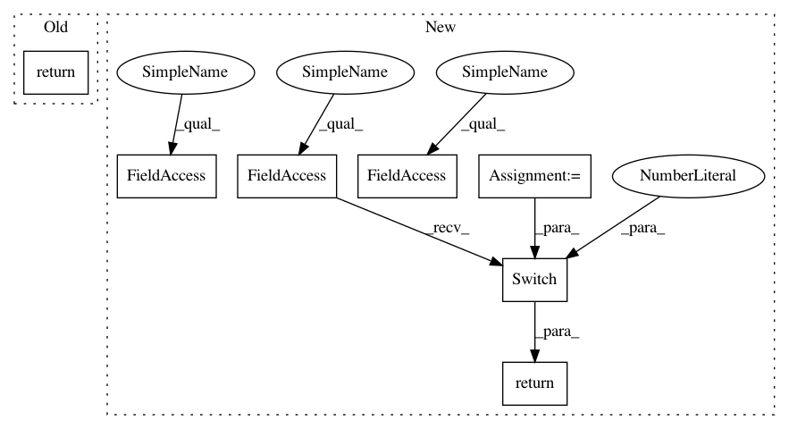

62c1b9e8d9e8c56b27672a631edf18963d72c3d1,pymc3/distributions/discrete.py,Poisson,logp,#Poisson#Any#,200
Before Change
def logp(self, value):
mu = self.mu
return bound(
logpow(mu, value) - factln(value) - mu,
mu >= 0, value >= 0)
class NegativeBinomial(Discrete):
R
After Change
def logp(self, value):
mu = self.mu
log_prob = bound(
logpow(mu, value) - factln(value) - mu,
mu >= 0, value >= 0)
// Return zero when mu and value are both zero
return T.switch(1 * T.eq(mu, 0) * T.eq(value, 0),
0, log_prob)
class NegativeBinomial(Discrete):
R
In pattern: SUPERPATTERN
Frequency: 3
Non-data size: 7
Instances
Project Name: pymc-devs/pymc3
Commit Name: 62c1b9e8d9e8c56b27672a631edf18963d72c3d1
Time: 2016-05-10
Author: chris.fonnesbeck@vanderbilt.edu
File Name: pymc3/distributions/discrete.py
Class Name: Poisson
Method Name: logp
Project Name: pymc-devs/pymc3
Commit Name: 62c1b9e8d9e8c56b27672a631edf18963d72c3d1
Time: 2016-05-10
Author: chris.fonnesbeck@vanderbilt.edu
File Name: pymc3/distributions/discrete.py
Class Name: Poisson
Method Name: logp
Project Name: pymc-devs/pymc3
Commit Name: 7a31475bb139893cd3fd2bd1dbc33d040a0511c8
Time: 2017-05-04
Author: aseyboldt@users.noreply.github.com
File Name: pymc3/distributions/multivariate.py
Class Name: MvNormal
Method Name: _logp_tau
Project Name: pymc-devs/pymc3
Commit Name: 2e8c36e6b6a2324e38fbb3f604f92e1bf02659c1
Time: 2016-05-10
Author: chris.fonnesbeck@vanderbilt.edu
File Name: pymc3/distributions/discrete.py
Class Name: Poisson
Method Name: logp